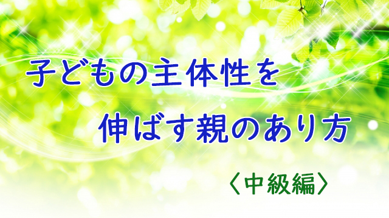

「ウチの子なかなか勉強しなくて困ります」「学校から帰ってきてもダラダラ寝てばかりでヤル気が見えません」など多くの親は、子どもの勉強不熱心を訴える。
子どもにもっと勉強してもらいたい。これはいつの時代でも親の悩みのナンバーワンである。
ところでどうして親はそれほどわが子に勉強してもらいたいのか。
それは端的に言って勉強することが子どもの将来の幸せにつながると思っているからだろう。
「勉強すること」＝「将来の幸せ」という図式。
しかしそれは本当だろうか。多くの親は勉強とはテストの点が良いことであり、テストの点が良いイコール学力が高いを意味し、学力が高ければ有名校や大学など高学歴につながると考えている。
学歴が高ければ就職が有利となり、経済的にも恵まれそれが幸せにつながるというわけだ。
つまり社会生活上、有利な条件が手に入ることが子どもの将来の幸福を保障する前提となる考えだ。
だがこれには疑問がある。「勉強ができる」＝「学力が高い」ということと、子どもの将来の幸せはそんな単純な因果関係で結べるものかという疑問だ。これは誰でも分かることではないか。
たとえば社会で成功するには、単純な学力よりも他者との協調性やコミュニケーション能力、忍耐力や発想力、リーダーシップなどのほうが大事だということは直感的に理解できるのではないか。
それでは子ども時代に身につけておくべき能力とは何か。
もちろん学力はないよりあったほうが良いだろうが、もっと子どもの将来を左右する別の力があるのではないか。
その力とは非認知スキルといわれるものだ。この非認知スキルこそが子どもの将来を決定づける力だというのが、いま世界的に教育界の定説となりつつある。
読み書きやテストで解答する力、すなわち教科の力（学力）は認知スキルといわれるもので、知能テストなどで計測できる能力である。この認知スキルを伸ばすことが今までは教育の最重要目的だったわけだが、最近は非認知スキルを子ども時代に伸ばすべきだという考えにシフトしつつある。
では、この非認知スキルとはどういうものか。詳しくは動画を見ていただくとして１つだけあげるなら、それは子どもの「自己効力感」を満たすための能力ということになる。
子どもが何かをやりとげようとするとき、その目的のために何をどのようにやるべきか。そして楽しみながら着実に達成への道を歩む上での自己コントロール力をいかに身につけるか。
親は子どもの自己効力感を高める上でどのようにサポートしていくべきか。
この観点で考えると従来の教育とは真逆の方向性が見えてくる。
どうか一緒に考えて頂きたい。
エンライテックの詳細を見る ＞＞